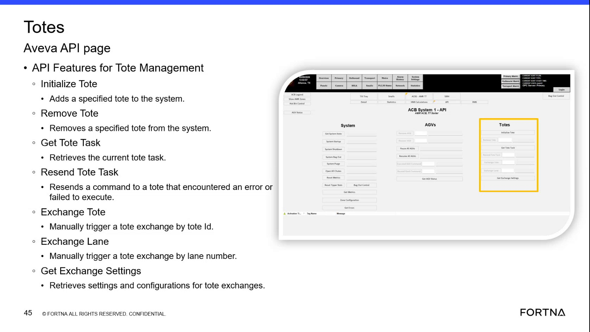

| Procedure ID | proc_manually_exchange_a_tote_by_lane_number_v1 |
|---|---|
| Title | Manually Exchange a Tote by Lane Number |
| Procedure Type | operation |
| Primary Role | L1_support |
| Support Safe | Yes |
| Validation Status | needs_sme_review |
| Merge Status | source_finalized |
Use the tote management Exchange Lane function to manually trigger a tote exchange by lane number. The training source explicitly states lane-based exchange is supported and provides a formatting example where a lane such as 3050 is entered as 03050.
Use when a manual tote exchange needs to be triggered by lane number through the tote management interface or API-backed Exchange Lane function, and the operator has the lane number to enter in the documented format example.
Responsible role: L1_support
Instruction:
Identify the lane number for the destination or lane to exchange.
Expected result:
A lane number is available for entry.
Stop or Escalate If:
Responsible role: L1_support
Instruction:
Convert the lane number to the documented format by adding a leading zero when needed, such as 3050 to 03050.
Expected result:
The lane number is formatted according to the documented example.
Stop or Escalate If:
Responsible role: L1_support
Instruction:
Open the Exchange Lane function in the tote management interface or API page.
Expected result:
The Exchange Lane function is visible and ready for input.
Screens / Images:

Stop or Escalate If:
Responsible role: L1_support
Instruction:
Enter the formatted lane number.
Expected result:
The formatted lane number is populated in the Exchange Lane input.
Screens / Images:
Stop or Escalate If:
Responsible role: L1_support
Instruction:
Submit the manual exchange action and verify through the available system response that the lane-based exchange was triggered.
Expected result:
A manual tote exchange is triggered using the specified lane number in the expected format.
Screens / Images:
Stop or Escalate If: